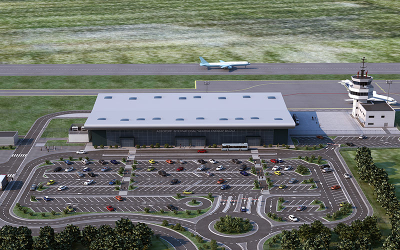

Bacăul este un important nod rutier. Drumurile care trec prin municipiu sunt:
 Aeroportul Internațional George Enescu din Bacău[16] deservește, pe lângă locuitorii județului Bacău, și pe cei ai județelor învecinate: Neamț, Vaslui, Vrancea, Covasna, Galați. Bacăul este legat prin curse directe de: Roma Fiumicino , Milano Bergamo, Torino Cuneo, Bologna, Londra Luton ( 30.10-29.03) si Bruxelles, Dublin, Paris - Beauvais (30.03- 29.10) - Blue Air
Municipiul Bacău este punctul de intersecție între: magistrala: București - Ploiești - Buzău - Râmnicu Sărat - Focșani - Adjud - Bacău - Roman - Pașcani - Suceava - Vadu Siretului și linia secundară: Bacău - Buhuși - Piatra Neamț - Bicaz Prin municipiul Bacău trec trenurile internaționale: BULGARIA EXPRES: Sofia - Ruse - Giurgiu - București - Ploiești - Buzău - Focșani - Bacău - Pașcani - Suceava - Dornești - Vicșani - Vadu Siretului - Moscova PRIETENIA: București - Ploiești - Buzău - Focșani - Bacău - Roman - Iași - Nicolina - Cristești Jijia - Ungheni - Chișinău